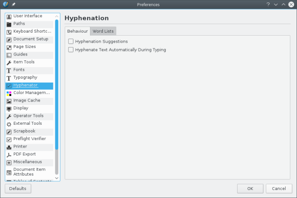
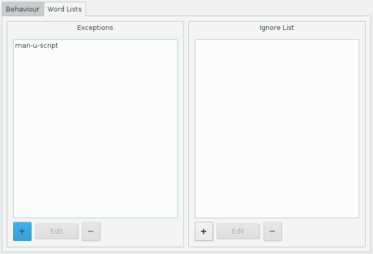
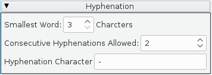
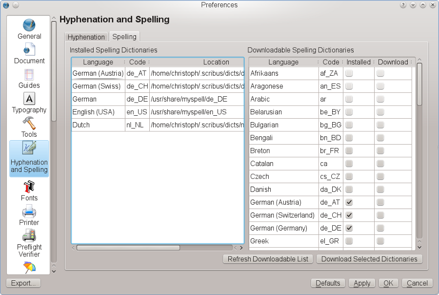
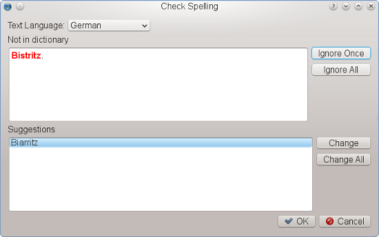

One of the reasons for ugly text layout is “white holes” between words, which in turn are the result of unhyphenated text. A general rule is that the shorter the a line of text, the more likely those gaps are. Hence the strong recommendation to use the hyphenator for continuous text.
To get the best hyphenation results, you are advised to configure the hyphenator properly. This can be done via File > Document Setup > Hyphenator for the current document and File > Preferences > Hyphenation and Spelling for new documents.
|  |
The dialog consists of two tabs. In the Behaviour tab, you can determine the general behaviour of the hyphenator:
In the Word Lists tab of the dialog there are two fields that allow you to specify words that you want to be treated differently. The left field is called Exceptions. Here you can add words that aren’t hyphenated correctly by the hyphenator. In the example above, the word “manuscript” has been inserted, including the desired positions for line breaks, which are specified by inserting “-” via the keyboard. To the right there is a second field called Ignore List. Any word that has been added to this list won’t be hyphenated. |  |
|
The settings to the right were formerly in Preferences, but have now moved out to a Hyphenation tab in the new Text Properties palette. The smallest word default setting is probably rather liberal, since few would want to hyphenate a 3-letter word. Similarly, you may may not want to have 2 lines in a row hyphenated. |  |
Select a text frame, adjust the text alignment to your liking and then select Extras > Hyphenate Text from the menu. Note that this will only hyphenate text in a selected frame.
In the Extras menu there is also the opposite feature, called Dehyphenate Text. It is used to dehyphenate text in a selected frame, but it can also be used to dehyphenate a single word. To do the latter, you have to select a hyphenated word in a text frame and then use the menu command.
Not every possible or reasonable hyphenation can be detected by the hyphenation algorithm. In such a case you can insert a so-called “soft hyphen” into a word. “Soft hyphen” essentially tells the hyphenator: “Hyphenate here, if possible,” where “possible” means that hyphenation is not prevented by other settings, like Consecutive Hyphenations Allowed. To insert a soft hyphen, you need to place the cursor in a word at the desired break position and then use Insert > Character > Soft Hyphen.
For spellchecking Scribus uses the Hunspell library, which is also utilized by other popular programs like LibreOffice, Firefox or InDesign.
Settings for Spellchecking were formerly under Preferences, but now have moved to Windows > Resources. This brings up the Resource Manager, with Spelling Dictionaries being one of the Categories to choose from. The purpose of this dialog is not the configuration of spellchecking options per se, but the management of available dictionaries.
|  |
If you have already installed a program that uses Hunspell, like, for instance, LibreOffice, Scribus will try to detect the installed dictionaries and use them. Installed dictionaries will be listed in the left column of the dialog, where you can also see their location. To make proper use of the right column you need an internet connection, because Scribus will download a list of dictionaries available in LibreOffice’s freedesktop.org repository. You can then select one or more new dictionaries for download. Please note that these dictionaries are stored in your home directory or its equivalent under .scribus/dicts, so other programs cannot use them, unless you copy them to the respective system or program directories.
Spellchecking works on a frame basis, so just as with hyphenation, you have to select a text frame before you can let Scribus look for errors. You invoke spellchecking with Extras > Check Spelling... (keyboard: Shift+F7). There is a language selector in the spellchecking dialog, but it will only work for the currently selected frame, after which you may need to reset the language for the next frame. The rest should be self-explanatory.
|  |